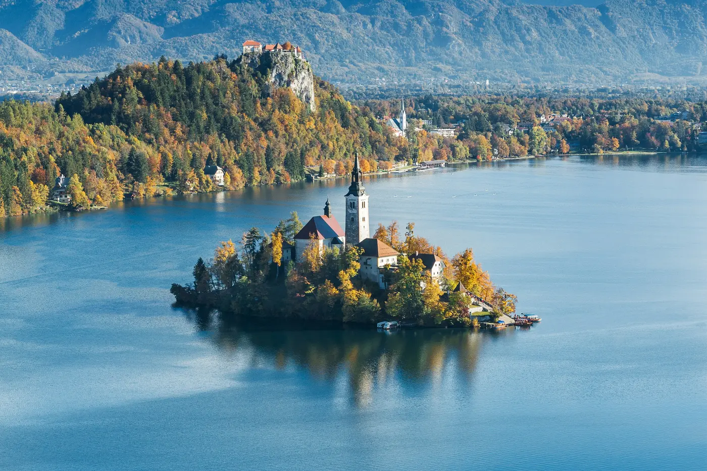
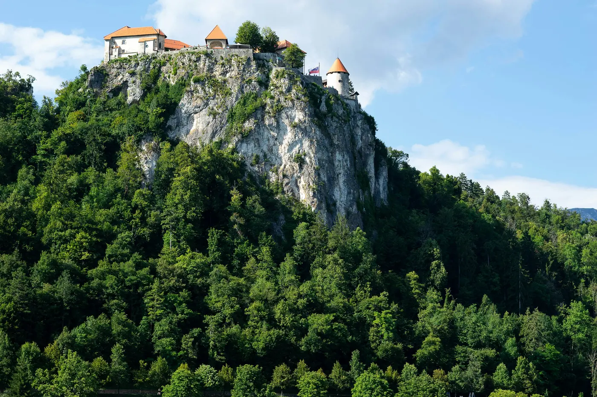

Vodiči / Bled
Bled — kad ići, aerodrom, šta obavezno vidi

Ovaj vodič je pisan za goste koji prvi put dolaze u Bled — alpsko jezero na severozapadu Slovenije, na oko sat vremena od Ljubljane, poznato po ostrvcu sa crkvom, dvorcu na steni i tradicionalnim veslačkim čamcima "pletna".
Kad doći u Bled — najbolje vreme za jezero
Jun do septembar je najtopliji period — jezero se greje za kupanje, a dani su dugi za šetnju oko obale i izlete u okolne planine. April i maj donose bujne vodopade od snega koji se topi u Vintgar klisuri, uz znatno manje turista. Decembar do februar pretvara Bled u snežnu razglednicu, sa božićnim vašarom u decembru i mogućnošću klizanja po zaleđenom jezeru u najhladnijim zimama — ali provери vremenske uslove, jer se planinski putevi mogu zatvarati.
Aerodrom i put do Bleda
Ljubljana Jože Pučnik (LJU) je najbliži aerodrom i leži gotovo na putu između Ljubljane i Bleda — vožnja do Bleda traje oko 30 minuta, često kraće nego do samog centra Ljubljane. Taksi košta oko 45€, dok redovni autobusi idu za manje od 5€, uz polaske približno na sat — pazi da neke linije idu preko Kranja, što dodaje oko 20 minuta. Postoji i nekoliko direktnih šatl-linija dnevno za oko 13€, praktičnih ako ne želiš da presedaš.
Koliko košta izlazak u Bledu — orijentacione cene
- Pletna do ostrva (tradicionalni veslački čamac, povratna karta) — 18-20€ po osobi.
- Ulaznica za Blejski grad — oko 18€, sa pogledom na jezero sa zidina.
- Vintgar klisura — ulaznica oko 10€, otvorena od proleća do jeseni.
- Kremšnita (legendarna blejska kremasta torta) — 4-5€ po parčetu.
- Iznajmljivanje čamca za samostalno veslanje — od 15€/sat.
Šta obavezno vidi u Bledu za 1-2 dana
- Blejsko ostrvo — malo ostrvce na sredini jezera sa crkvom Uznesenja Marijinog, do kog se stiže samo pletnom ili sopstvenim čamcem.
- Blejski grad — srednjovekovni dvorac na steni iznad jezera, sa najpoznatijim pogledom na Bled u celini.
- Šetnica oko jezera — kompletan krug od oko 6 km, ravan i lagan za pešačenje ili biciklo.
- Vintgar klisura — drvene staze iznad reke Radovne kroz usek stena, nekoliko minuta vožnje od centra.
- Vidikovac Ojstrica — kraća, ali uspinjuća šetnja do najfotografisanijeg pogleda na jezero i ostrvo odozgo.

Gde jesti u Bledu — lokalna kuhinja
Kremšnita je obavezna — kremasta torta koja se u Bledu pravi po istom receptu od 1953. godine, najbolje u kafiću odmah uz jezero. Za ozbiljniji obrok, restorani duž obale nude pastrmku iz jezera i štrukle (slovenačko testo punjeno sirom ili orasima). Gostionice ("gostilne") malo dalje od glavne šetnice, prema centru grada, obično imaju niže cene i domaću atmosferu.
Skrivena mesta u Bledu van glavnih ruta
- Jezero Bohinj — veće i mirnije alpsko jezero pola sata vožnje od Bleda, sa manje turista i planinom Triglav u pozadini.
- Brdo Straža — vidikovac sa letnjom tobogan-stazom, popularan kod porodica, malo van centralne gužve.
- Plato Pokljuka — visoravan sa borovim šumama i biatlonskim centrom, dobra za mir i planinarenje.
- Rano jutro na Vintgaru — klisura se otvara od jutra, a prve posete pre autobusa sa grupama donose skoro potpunu tišinu.
Praktični saveti pre puta
- Dokumenta — Slovenija je u EU i Šengenu, pa nema granične kontrole za putnike iz većine evropskih zemalja.
- Valuta — evro (€); kartice se prihvataju skoro svuda, uključujući manje kafiće.
- Parking — centar oko jezera je delom zatvoren za automobile; parkiraj se na obeleženim parkinzima i nastavi peške.
- Obuća i odeća — za Vintgar i vidikovce poput Ojstrice poneti udobnu obuću; planinsko vreme se brzo menja, pa je slojevita odeća korisna i leti.
- Sezonske gužve — jul i avgust, kao i vikendi u sezoni, donose najveće grupe kod ostrva i dvorca; najmirnije je rano ujutru.